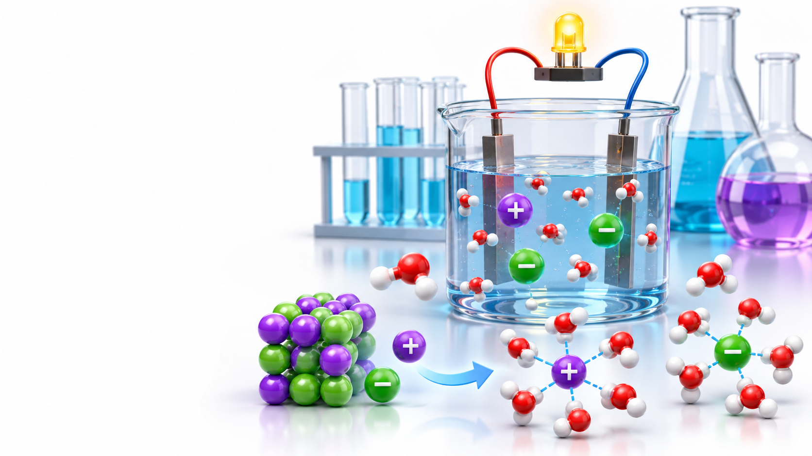

Контроль знань
Електролітична дисоціація
Дослідіть, як розчини проводять струм. Потім перевірте знання на інтерактивній контрольній.

Коротко про головне
Електроліт → йони у розчиніКатіон → позитивний зарядАніон → негативний зарядДисоціація → утворення йонівСильний електроліт → значна частка йонівОсад / газ / вода → рушій реакції обміну
Приклад: NaCl → Na⁺ + Cl⁻. У водному розчині йони переносять електричний заряд. Увага: цукор розчиняється, але практично не утворює йонів.
Тренувальна лабораторія · не оцінюється
🔬 Чи засвітиться лампочка?
Оберіть речовину та концентрацію. Спрогнозуйте, чи проводить розчин струм, а потім запустіть дослід.
+
−
Оберіть умови й запустіть дослід.
Спрощена навчальна модель: яскравість якісно відображає наявність йонів, а не точні вимірювання провідності. Дослід віртуальний.
Контрольна робота · 12 завдань
🧪 Перевірка знань
Завдання різних типів: один варіант, декілька варіантів, відповідність, рівняння та ситуаційні задачі. Відповіді відкриються лише після завершення.
Мій висновок
Кнопка відкриває друк браузера: оберіть «Зберегти як PDF». Дані не надсилаються на сервер.